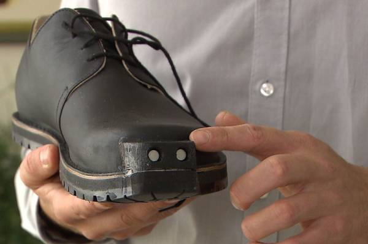
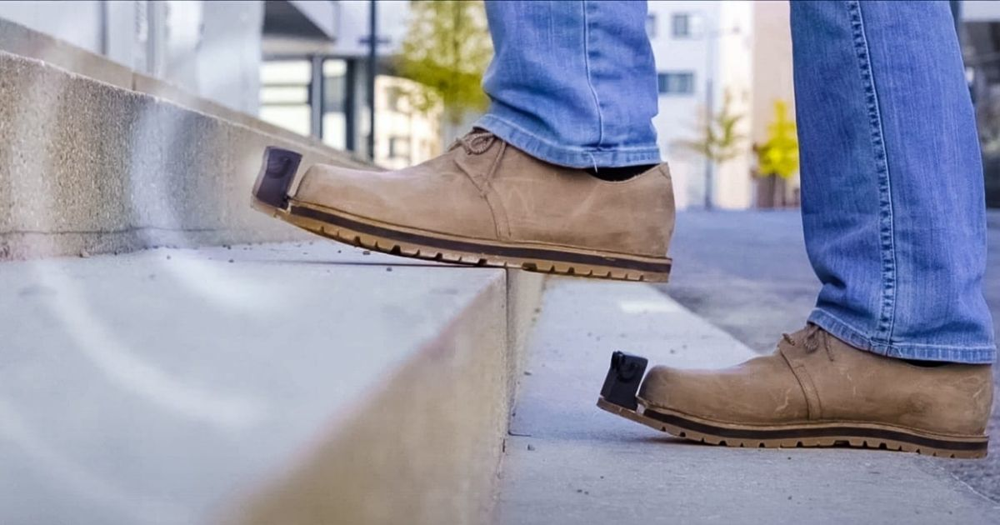

Sample Image ----->
Blind people have difficulty navigating, which is obvious, considering that they have lost the ability to see, they can't know where they're going, where they're walking to, and where they're currently at. This is where the Smart Shoes, for the blind, come into play. With a built in camera, sensor, and many other cool technologies, it greatly assists the blind with transporting themselves.
 
The camera on the front of the shoe detects any obstacles in the way and
sends a directional actuation/vibration to the wearer, letting them know
that there is an obstacle in the way, and that they should redirect. The
shoes are also made of sturdy material, so in the case of a visually
impaired person colliding with an obstacle, the sturdy material ensures
that the blind person won't be harmed or injured, as they would if they
were wearing a normal shoe.
Furthermore, the shoe would also
have a built-in GPS system, and bluetooth connection, so once the user
decides where they want to go, the shoe automatically decides the
fastest and safest route to get there, and begins using directional
actuations and vibrations to let the user know when to turn and where to
go. In the case of the user going the wrong direction, and it being too
late to continue with the intended route, the shoe will automatically
decide the next shortest route and redirection to get to the wanted
destination.
The shoe also may have a temperature detector
to detect fires and hazardous materials, and telling the user to
redirect. This can also be accompanied with a detector to check for
water and rain, so for example if the user is walking into a deep
puddle, the shoes detect the puddle and redirect.